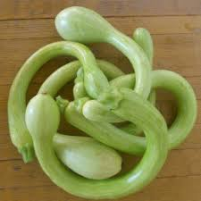
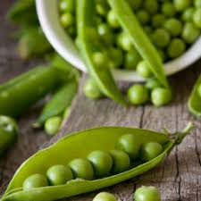

Zucchine
Coltivare in terreno molto ricco di materia organica e non coltivare dopo Solanacee o piante della stessa famiglia delle cucurbitacee
- Varietà: Zucchina Chiara di Faenza
- Periodo di Semina: Marzo/Aprile
- Primo Raccolto: Fine Aprile
- Ultimo Raccolto: Fine Luglio
- Raccolto:
Dimensione Quantità Piccole(10cm) 16 Medie(11-16cm) 26 Grandi(<16cm) 9 51
Piselli
American Wonder: Varietà media precoce come ciclo colturale
Consigli
- Piantare in un semenzaio riscaldato.
E' Importante:- Acquistare vasetti biodegradabili (di cocco o cartone)
- Mantenere areato il semenzaio per evitare muffe
- Non usare il coperchio del semenzaio
- Non mettere il semenzaio vicino al termosifone
- Fissare i sostegni nel terreno non appena le piantine raggiungono i 10cm
- Acquistare una rete con spazi di non più di 10cm per garantire sostegni adeguati